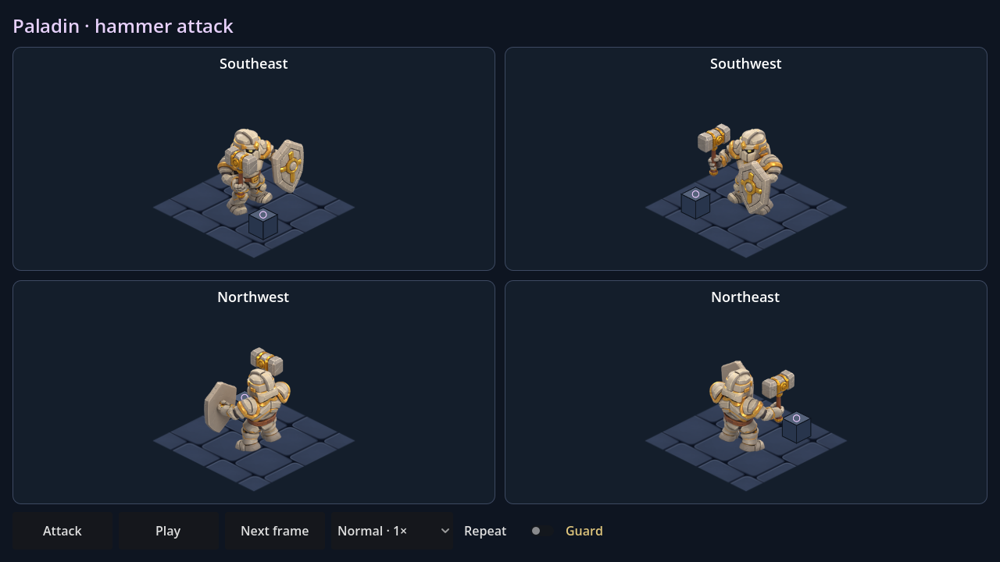

Paladin · attaque au marteau
Le paladin arme son marteau, frappe vers le bas, amortit le choc puis revient en garde. Les pieds restent plantés et le bouclier protège son flanc. La petite borne sert uniquement à vérifier le contact ; ce n'est pas un nouveau décor du jeu.

900 ms · impact à 450 ms · 10 poses, dont la garde réutilisée en fin. Les aperçus bouclent avec une pause ; la scène joue un seul coup par défaut.
Dans Godot, ouvrir PaladinAttack.tscn puis F6. Attaque, pause, image suivante, vitesse ×0,5 / ×1 / ×1,5 / ×2 et répétition optionnelle.
Toutes les poses · Reproduction et limites · Contrôles du modèle rechargé